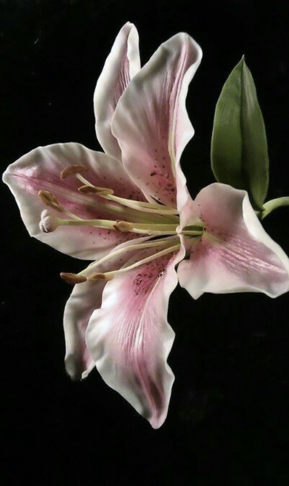
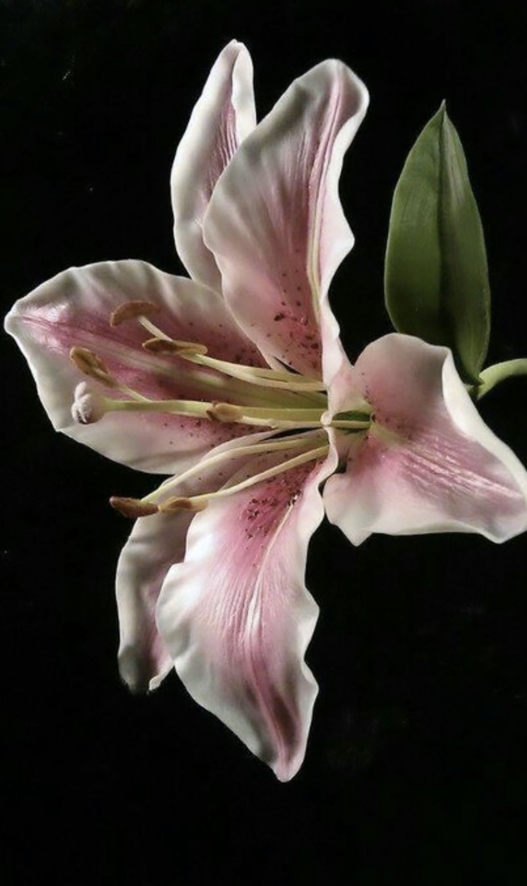

I remember having a friend,
persistently trailing my steps,
resisting my efforts to push him away,
providing comfort in moments of darkness,
and despite the tightly closed door,
holding a loyal presence on the red rug outside my bedroom.


I remember how my world fell apart in a flash the day I witnessed him die in a car accident,
his radiant, innocent, and smiling eyes, as usual,
gazing in my direction, about to run into my arms.
I remember how the days that followed weighed upon my soul.

I carried regret like a stone in my pocket.
I rewound the moments again and again, wishing I could rewrite them. Wishing I had said something different. Wishing I had held him tighter.

Regret is like a shadow that grows longer the more I look behind me.
It is a song that plays the same notes, even when I beg for silence.


I am a survivor of those voices. Saying that feels strange and true at once.
Survival did not arrive like a victory. It arrived with fear and with tiny,
stubborn,
fragile hope.

I do not glorify death.
I do not romanticize the way it can make a life feel meaningful by absence.
But I can’t deny its strange power. I cannot pretend it is only terrible.
So I keep the memories.
The bad ones and the good ones.
They are pages I reread again and again.
They are the proof that I loved,
and that I was loved.
Love and regret can live in the same small room.
Will it bring us to another life, another version, another meeting?
I don't know.
I only know I keep the thread,
and I keep hoping.